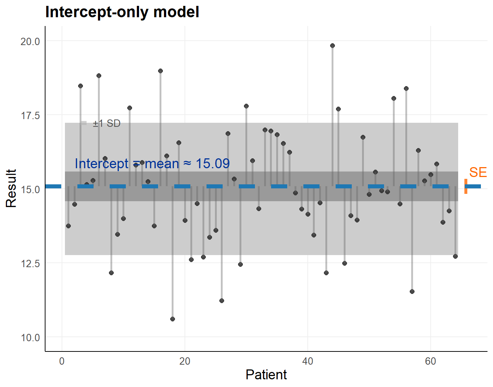
Mixed Models: a Primer
About how to analyze clustered data
Vitality turns Mixed
- Aim: develop intuition for mixed models
- Focus on
- equations (building blocks)
- visualizations
Context
Long History
- 1950: Henderson equations define mixed model
- 1982: Laird and Ware model allows modeling growth trajectories
- 1990: SAS PROC MIXED makes it possible for us, now in all major software
Added Value
- MANOVA made flexible and efficient
- Extends regression; modeling dependencies
1 Regression
1.1 Working Example
Let’s assume a SQUARE test exists
- with test results between 0 and 20
- performed on patients
- who have particular characteristics (e.g., age, …)
- under particular conditions (e.g., treated or not)
Aim: understand the conditions (e.g., treatment) under which test results are higher/lower, accounting for age
- by relating data (test results ~ outcome) to conditions and characteristics (predictors) → columns
- using information offered by each of the patients (replications ~ sample size) → rows
Equation-wise:
\[ square\ test\ result_{id} = \beta_0 + \beta_1 * Treatment_{id} + \beta_2 * Age_{id} + \varepsilon_{id}, \qquad \text{for } id = 1,\dots,n, \]
More generically:
\[ y_i = \beta_0 + \beta_1 x1_i + \beta_2 x2_i + \varepsilon_i, \qquad \text{for } i = 1,\dots,n. \]
Regression (and ANOVA)
- is modeling variance (e.g., in \(y_i\))
- turning it into a conditional mean (e.g., in \(\beta_0 + \beta_1 * Treatment_{id} + \beta_2 * Age_{id}\))
- by minimizing squared error (e.g., of \(\varepsilon_i^2\)).
1.2 Regression Model: Mean and Variance
Regression as swiss knife.
A regression model with only an intercept extracts
- mean (conditional on nothing else)
- variance (of the residuals around the mean)
- standard error (uncertainty around the estimated mean)
\[ y_i = \beta_0 + \varepsilon_i \qquad with \qquad \varepsilon_i \overset{\text{i.i.d.}}{\sim} \mathcal{N}(0, \sigma^2). \]
Patients on x-axis, observations on y-axis
- line represents average
- greyed band +/- 1 standard deviation
Fitted intercept is the mean,
or average SQUARE test result
\[ \hat{\beta}_0 = \bar{y} \]
Residuals are difference data - model based expectation.
\[ e_i = y_i - \bar{y} \]
No variance explained, with total variance \(\sigma^2\).
\[ \sigma^2 = \frac{1}{N} \sum_{i=1}^{N} (y_i - \mu)^2 \]
Predicts the same value for every case.
\[ SE(\hat{\beta}_0) = \frac{\sigma}{\sqrt{n}} \]
The standard error (SE; estimation) is a function of the standard deviation (sd; data).
lm_b0 <- lm(scores ~ 1, data = dta_base)| Term | Estimate | Std. Error | t value | p value |
|---|---|---|---|---|
| (Intercept) | 15.086 | 0.251 | 60.221 | 2.11 × 10−57 |
| R² | adj. R² | σ | statistic | p.value | df | logLik | AIC | BIC | deviance | df.residual | nobs |
|---|---|---|---|---|---|---|---|---|---|---|---|
| 0.000 | 0.000 | 2.004 | NA | NA | NA | −134.801 | 273.601 | 277.919 | 253.034 | 63.000 | 64.000 |
1.3 Two Groups; t-test look-alike
A regression model with an intercept and a treatment effect (slope, dichotomous variable Treatment vs. Control)
- treatment and control specific means
- difference between treatment and control
- standard error of difference
The regression model is:
\[ y_i = \beta_0 + \underline{\beta_1 x_i} + \varepsilon_i, \qquad \text{for } i = 1,\dots,n, \]
With
\[ x_i = \begin{cases} 0 & \text{for control}, \\ 1 & \text{for treatment}. \end{cases} \]
And the usual distributional assumptions.
\[ \varepsilon_i \overset{\text{i.i.d.}}{\sim} \mathcal{N}(0, \sigma^2). \]
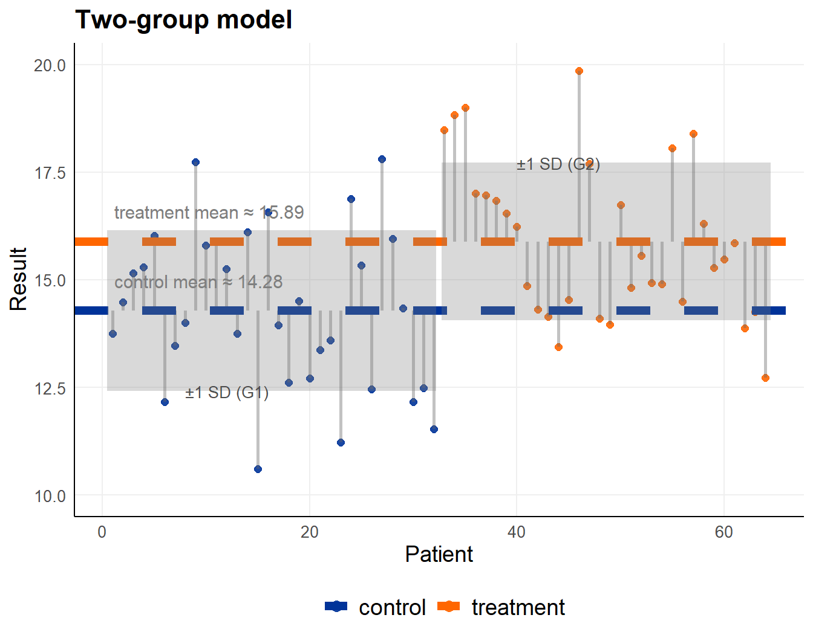
Patients on x-axis, observations on y-axis
- line represents group specific means
- greyed band +/- 1 group specific standard deviation
Fitted intercept is the mean for group coded as 0,
fitted slope is the difference between the two groups offer estimated group means (conditional means)
\[ \hat{\beta}_0 = \bar{y}_{x=0} \] \[ \hat{\beta}_1 = \bar{y}_{x=1} - \bar{y}_{x=0} \]
Residuals are still difference data - model based expectation.
\[ e_i = y_i - \hat{y}_i \]
Notice: residuals are defined over all observations, not per condition.
The standard error (SE; estimation) is a function of the group specific standard deviations (sd; data) and sample sizes.
About 16.36 % of the variance is now explained.
Predicts the same value for every case within a group.
lm_groups <- lm(score ~ group, data = dta_groups)| Term | Estimate | Std. Error | t value | p value |
|---|---|---|---|---|
| (Intercept) | 14.282 | 0.327 | 43.728 | 2.62 × 10−48 |
| grouptreatment | 1.609 | 0.462 | 3.483 | 9.15 × 10−4 |
| R² | adj. R² | σ | statistic | p.value | df | logLik | AIC | BIC | deviance | df.residual | nobs |
|---|---|---|---|---|---|---|---|---|---|---|---|
| 0.164 | 0.150 | 1.848 | 12.131 | 0.001 | 1.000 | −129.082 | 264.165 | 270.641 | 211.627 | 62.000 | 64.000 |
1.4 Continuous Variable
A regression model with an intercept and a continuous predictor (slope)
- predictor specific means
- difference for 1 unit extra on the predictor
- standard error of the slope
The regression model is exactly the same as before:
\[ y_i = \beta_0 + \underline{\beta_1 x_i} + \varepsilon_i, \qquad \text{for } i = 1,\dots,n, \]
with the usual distributional assumption:
\[ \varepsilon_i \overset{\text{i.i.d.}}{\sim} \mathcal{N}(0, \sigma^2). \]
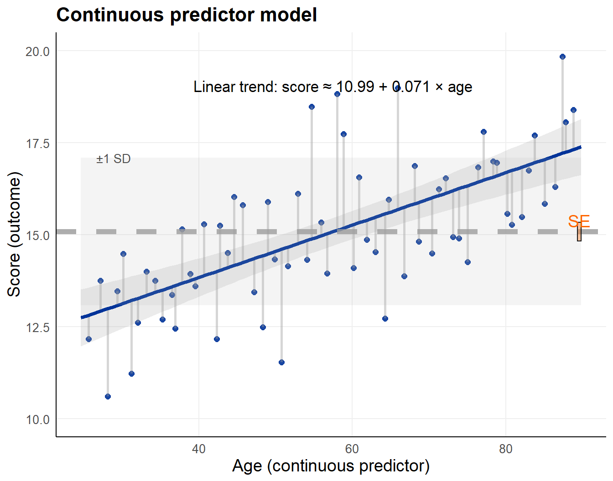
Note, the same 64 scores are used, but treated as continuous predictor \(x_i\).
Predictor \(x_i\) on x-axis (age), observations on y-axis
- line represents linear trend
- greyed band +/- 1 overall standard deviation
Fitted intercept is the mean at \(x_i\) = 0
Fitted slope is increase per unit \(x_i\),
Note: center your \(x_i\) around another value,
change the intercept.
\[ \hat{\beta}_0 = \mathbb{E}[Y \mid X=0] \]
\[ \hat{\beta}_1 = \frac{\Delta \mathbb{E}[Y]}{\Delta X} \]
Residuals are difference
data - model based expectation.
\[ e_i = y_i - \hat{y}_i \]
\[ SE(\hat{\beta}_1) = \sqrt{\frac{sd^2}{n \cdot \text{Var}(X)}} \]
The standard error (SE; estimation) is a function of the residual variance relative to predictor spread.
lm_cont <- lm(score ~ age, data = dta_cont)| Term | Estimate | Std. Error | t value | p value |
|---|---|---|---|---|
| (Intercept) | 10.987 | 0.618 | 17.770 | 5.15 × 10−26 |
| age | 0.071 | 0.010 | 6.963 | 2.49 × 10−9 |
| R² | adj. R² | σ | statistic | p.value | df | logLik | AIC | BIC | deviance | df.residual | nobs |
|---|---|---|---|---|---|---|---|---|---|---|---|
| 0.439 | 0.430 | 1.513 | 48.484 | 0.000 | 1.000 | −116.313 | 238.626 | 245.103 | 141.995 | 62.000 | 64.000 |
1.5 Dichotomized continuous predictor
Same model !
A regression model with an intercept and a continuous predictor that is dichotomized into two groups.
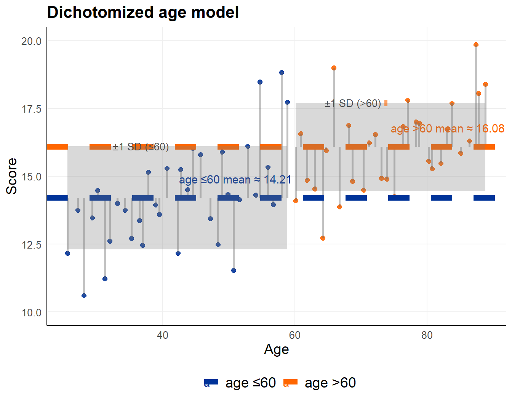
Predictor \(X_i\) on x-axis (age), observations on y-axis
- line represents group specific average
- greyed band +/- 1 group specific standard deviation
Same model, but
- residual variance increases
- explained variance decreases
- residuals are clustered, not independent
violation of the distributional assumption:
\[ \varepsilon_i \overset{\text{i.i.d.}}{\sim} \mathcal{N}(0, \sigma^2). \]
lm_dich <- lm(score ~ age_d, data = dta_dich)| Term | Estimate | Std. Error | t value | p value |
|---|---|---|---|---|
| (Intercept) | 14.206 | 0.306 | 46.487 | 6.59 × 10−50 |
| age_dage >60 | 1.877 | 0.446 | 4.206 | 8.51 × 10−5 |
| R² | adj. R² | σ | statistic | p.value | df | logLik | AIC | BIC | deviance | df.residual | nobs |
|---|---|---|---|---|---|---|---|---|---|---|---|
| 0.222 | 0.209 | 1.782 | 17.692 | 0.000 | 1.000 | −126.767 | 259.535 | 266.011 | 196.858 | 62.000 | 64.000 |
1.6 Multiple Regression; combining information
A regression model with an intercept, a group difference, and a continuous predictor
- predictor specific means
- that can differ depending on other predictors
- with standard errors for each slope
The regression model starts being interesting:
\[ y_i = \beta_0 + \beta_1 x_{1i} + \beta_2 x_{2i} + \beta_3 x_{1i} x_{2i} + \varepsilon_i, \qquad \text{for } i = 1,\dots,n, \]
with the usual distributional assumption:
\[ \varepsilon_i \overset{\text{i.i.d.}}{\sim} \mathcal{N}(0, \sigma^2). \]
1.6.1 Interaction
Interactions would allow effects to be condition dependent.
- Age effect differs per group.
- Group difference are age dependent.
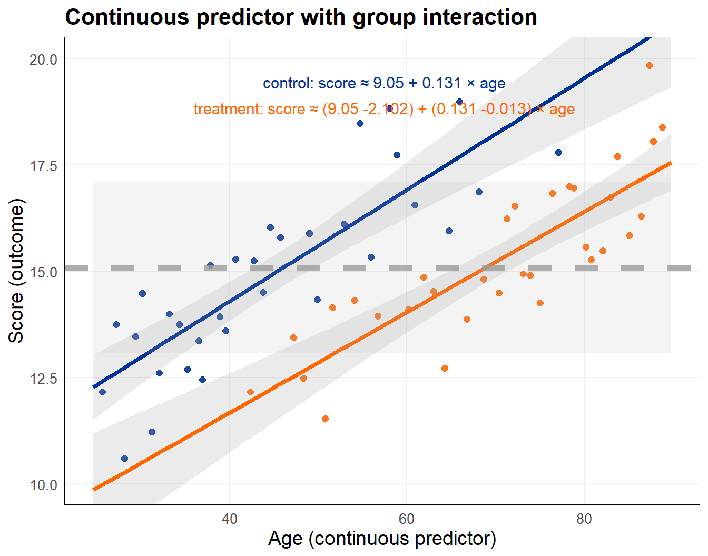
Predictor \(x_{2i}\) on x-axis (age), observations on y-axis
- line represents group specific linear trend
- greyed band +/- 1 group specific standard deviation
lm_int <- lm(score ~ age * group, data = dta_int)| Term | Estimate | Std. Error | t value | p value |
|---|---|---|---|---|
| (Intercept) | 9.050 | 0.684 | 13.227 | 1.94 × 10−19 |
| age | 0.131 | 0.015 | 8.942 | 1.24 × 10−12 |
| grouptreatment | −2.102 | 1.266 | −1.660 | 1.02 × 10−1 |
| age:grouptreatment | −0.013 | 0.021 | −0.620 | 5.38 × 10−1 |
In this case, no evidence for an interaction.
| R² | adj. R² | σ | statistic | p.value | df | logLik | AIC | BIC | deviance | df.residual | nobs |
|---|---|---|---|---|---|---|---|---|---|---|---|
| 0.707 | 0.692 | 1.112 | 48.215 | 0.000 | 3.000 | −95.539 | 201.077 | 211.872 | 74.187 | 60.000 | 64.000 |
1.6.2 Main effects
Simplifying the model and its interpretation, the interaction is removed.
When age is considered jointly with group.
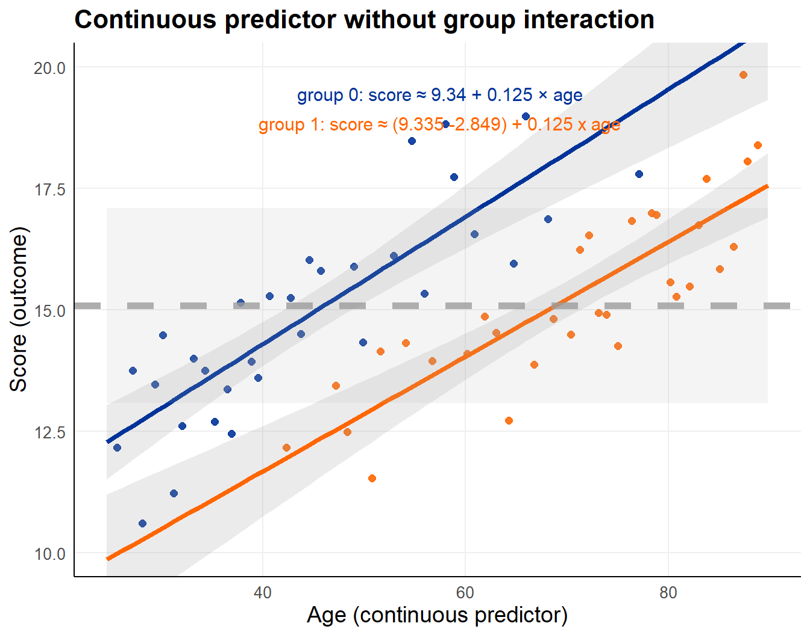
Predictor \(x_{2i}\) on x-axis (age), observations on y-axis
- line represents group specific linear trend
- greyed band +/- 1 group specific standard deviation
lm_int_main <- lm(score ~ age + group, data = dta_int)| Term | Estimate | Std. Error | t value | p value |
|---|---|---|---|---|
| (Intercept) | 9.335 | 0.504 | 18.527 | 9.82 × 10−27 |
| age | 0.125 | 0.010 | 12.005 | 1.04 × 10−17 |
| grouptreatment | −2.849 | 0.384 | −7.417 | 4.44 × 10−10 |
There is a very clear group effect. In this case, no evidence for an interaction.
| R² | adj. R² | σ | statistic | p.value | df | logLik | AIC | BIC | deviance | df.residual | nobs |
|---|---|---|---|---|---|---|---|---|---|---|---|
| 0.705 | 0.695 | 1.106 | 72.866 | 0.000 | 2.000 | −95.743 | 199.486 | 208.122 | 74.662 | 61.000 | 64.000 |
1.6.3 Ignoring a relevant predictor
With only group in the model, ignoring age.
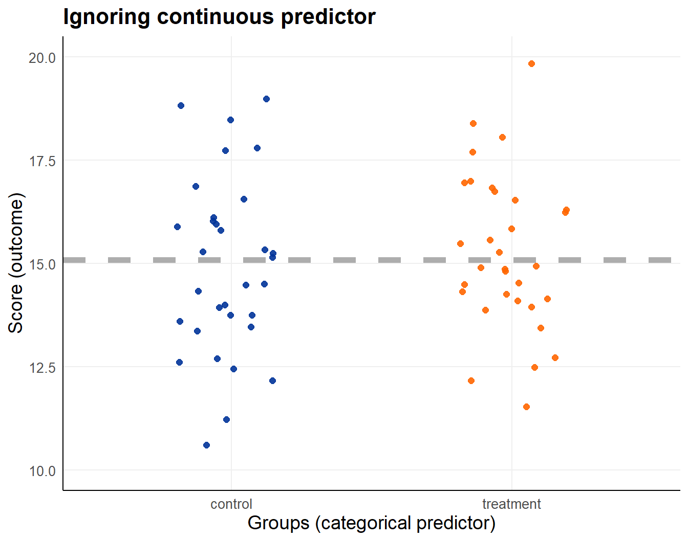
Predictor \(x_{1i}\) on x-axis (age), observations on y-axis
lm_int_ign <- lm(score ~ group, data = dta_int)| Term | Estimate | Std. Error | t value | p value |
|---|---|---|---|---|
| (Intercept) | 14.910 | 0.356 | 41.915 | 3.32 × 10−47 |
| grouptreatment | 0.351 | 0.503 | 0.698 | 4.88 × 10−1 |
There is no group effect !
Remember: conditional on age there is one.
Do not make decisions based on univariable analysis unless you have to.
| R² | adj. R² | σ | statistic | p.value | df | logLik | AIC | BIC | deviance | df.residual | nobs |
|---|---|---|---|---|---|---|---|---|---|---|---|
| 0.008 | −0.008 | 2.012 | 0.487 | 0.488 | 1.000 | −134.550 | 275.100 | 281.577 | 251.061 | 62.000 | 64.000 |
1.7 Assumptions
Models are based on assumptions,
violations can compromise inference.
For linear regression the assumptions are:
- Linearity: Predictor-outcome relationship is linear
- Independence: Residuals are i.i.d. (no clustering/autocorrelation)
- Homoscedasticity: Constant residual variance
- Normality: Residuals normally distributed (for inference)
Evaluation of model assumption is based on (standardized) residuals.
To evaluate linearity, plot the outcome in relation to
- the fitted value for the whole model
- individual predictors for parts of the model
To evaluate independence, plot the residuals in relation to
- the fitted value for the whole model
- individual predictors for parts of the model
and watch out for patterns
To evaluate homoscedasticity, plot the standardized residuals in relation to
- individual predictors for parts of the model
and watch out for predictor specific spread
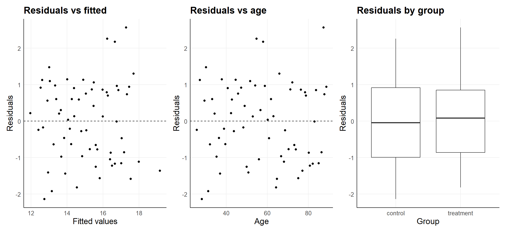
To evaluate normality of the residuals, use a qqplot.
Note, normality of (standardized) residuals follows from the assumption that disturbances are random and additive.
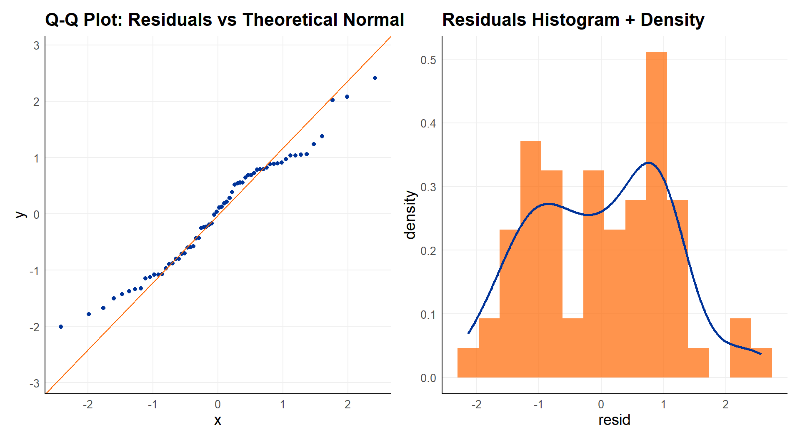
For the identically and individually distributed assumption:
\[\varepsilon_i \overset{\text{i.i.d.}}{\sim} \mathcal{N}(0, \sigma^2). \]
The lack of any patterns supports the i.i.d. assumption (does not prove it) Remaining patterns in the residuals can possibly be addressed
- using additional variables
- using transformations
Build models to capture the systematicity in the data,
so the remaining part is random, and ideally relatively small.
For completeness,
while tests are just tests:
| Test | Result | Interpretation |
|---|---|---|
| Durbin-Watson (Independence) | 2.030 | ≈2 = no autocorrelation ✓ |
| Breusch-Pagan (Homoscedasticity) | 0.257 | p > 0.05 = constant variance ✓ |
| Shapiro-Wilk (Normality) | 0.162 | p > 0.05 = normality ✓ |
2 Dependent data
Data is often internally dependent:
- cross-sectional clustering: groups of observations (classes, litters, clinics, …)
- within-unit clustering: repeated measures (trajectories, pre-post, …)
- distances (less relation when further)
- study effects measuring the same (meta-analysis)
- spatial random effects
- item response models, with respondent clustering
- …
What dependency looks like:
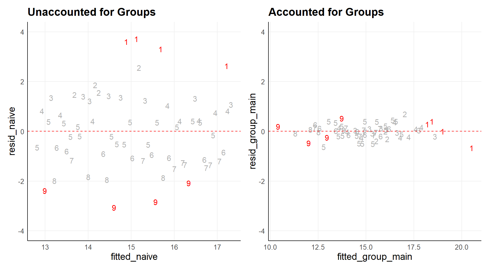
Note the assumption
\[ \varepsilon_i \overset{\text{i.i.d.}}{\sim} \mathcal{N}(0, \sigma^2). \]
All residuals (variance unaccounted for by the model) assumed distributed individually and identically,
all part of the same underlying distribution !
Any residual is fully uninformative about any other residual. All residuals combined reflect one single distribution.
The clustering shows that grouping should be included in the model.
2.1 Working Example
Let’s assume a SQUARE test exists
- with test results between 0 and 20
- performed on patients
- part of one of 9 groups of patients
- who have particular characteristics (e.g., age, …)
- under particular conditions (e.g., treated or not)
We want to understand the conditions (e.g., treatment) under which test results are higher/lower
- acknowledging group-members to be more similar to each-other, in average
- by relating
- the data (test results ~ outcome) to
- the conditions (patient properties ~ predictors)
- → columns
- using information offered by each of the patients (replications ~ sample size)
- → rows
2.2 Regression Model: grouping as Fixed variable
Bringing in groups
- reduces residuals
- results in residuals around 0 for each group
- removed dependence: knowledge of an instance of a group is not informative about the other instances
2.2.1 Independent groups, common age effect
Using a group identification variable to account for groups.
The regression model is the same as before, 9 groups instead of 2:
\[ y_i = \beta_0 + \beta_1 x_i + \underline{\beta_2 g_i} + \varepsilon_i, \qquad \text{for } i = 1,\dots,n, \]
with the usual distributional assumption:
\[ \varepsilon_i \overset{\text{i.i.d.}}{\sim} \mathcal{N}(0, \sigma^2). \]
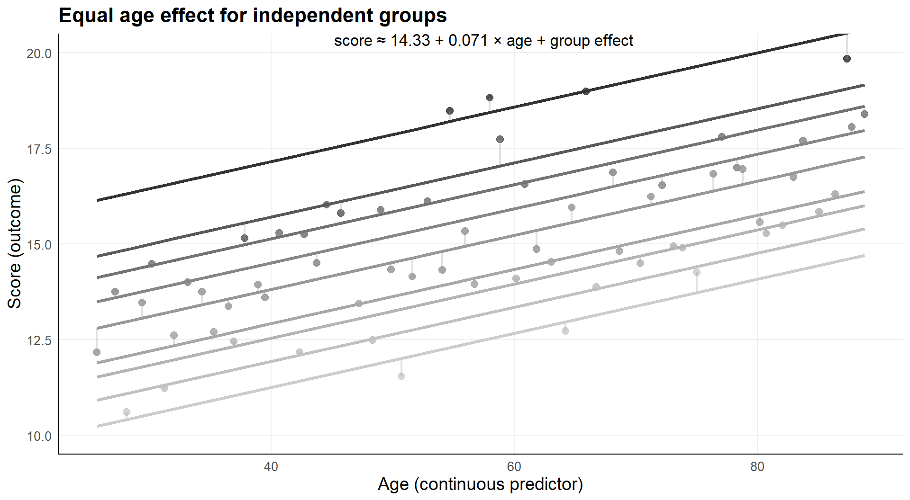
Age effect, assumed equal for each of 9 groups.
Age on x-axis, observations on y-axis
- lines represent group specific conditional averages
- in this case, conditional on age
- age effect, independent of group
With nine groups in the model.
lm_group_main_9 <- lm(score ~ age + group, data = dta_grouped)| Term | Estimate | Std. Error | t value | p value |
|---|---|---|---|---|
| (Intercept) | 14.327 | 0.213 | 67.238 | 9.56 × 10−54 |
| age | 0.071 | 0.002 | 31.777 | 1.24 × 10−36 |
| group2 | −1.458 | 0.221 | −6.606 | 1.80 × 10−8 |
| group3 | −2.021 | 0.189 | −10.696 | 5.99 × 10−15 |
| group4 | −2.652 | 0.188 | −14.133 | 8.70 × 10−20 |
| group5 | −3.347 | 0.174 | −19.287 | 6.97 × 10−26 |
| group6 | −4.245 | 0.188 | −22.564 | 3.66 × 10−29 |
| group7 | −4.623 | 0.188 | −24.652 | 4.66 × 10−31 |
| group8 | −5.230 | 0.221 | −23.711 | 3.20 × 10−30 |
| group9 | −5.914 | 0.218 | −27.133 | 3.84 × 10−33 |
| R² | adj. R² | σ | statistic | p.value | df | logLik | AIC | BIC | deviance | df.residual | nobs |
|---|---|---|---|---|---|---|---|---|---|---|---|
| 0.980 | 0.977 | 0.306 | 294.448 | 0.000 | 9.000 | −9.568 | 41.136 | 64.884 | 5.053 | 54.000 | 64.000 |
There is a clear age and group effect, each of the groups differs from the reference group conditional on age.
The Mean Squared Error is huge compared to the Residual Variance.
| Term | df | Sum Sq | Mean Sq | F value | p value |
|---|---|---|---|---|---|
| age | 1.000 | 111.039 | 111.039 | 1,186.612 | 1.95 × 10−38 |
| group | 8.000 | 136.942 | 17.118 | 182.928 | 2.80 × 10−36 |
| Residuals | 54.000 | 5.053 | 0.094 | NA | NA |
2.2.2 Group specific age effect
What if we would allow group specific age effects.
The regression model is:
\[ y_i = \beta_0 + \beta_1 \cdot x1_i + \beta_2 \cdot g2_i + \beta_3 \cdot x1_i \cdot g2_i + \varepsilon_i, \qquad \text{for } i = 1,\dots,n, \]
with the usual distributional assumption:
\[ \varepsilon_i \overset{\text{i.i.d.}}{\sim} \mathcal{N}(0, \sigma^2). \]
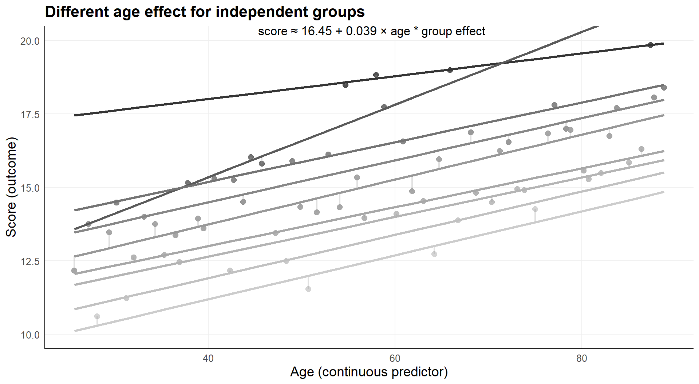
The age effect is allowed to differ for each of 9 groups.
Age on x-axis, observations on y-axis
- lines represent group specific conditional averages
With nine group in the model.
lm_group_int_9 <- lm(score ~ age * group, data = dta_grouped)| Term | Estimate | Std. Error | t value | p value |
|---|---|---|---|---|
| (Intercept) | 16.453 | 0.730 | 22.541 | 1.69 × 10−26 |
| age | 0.039 | 0.011 | 3.611 | 7.51 × 10−4 |
| group2 | −6.047 | 1.123 | −5.386 | 2.38 × 10−6 |
| group3 | −3.964 | 0.793 | −5.001 | 8.75 × 10−6 |
| group4 | −4.818 | 0.785 | −6.141 | 1.78 × 10−7 |
| group5 | −5.759 | 0.762 | −7.560 | 1.33 × 10−9 |
| group6 | −6.099 | 0.798 | −7.643 | 9.98 × 10−10 |
| group7 | −6.496 | 0.872 | −7.447 | 1.95 × 10−9 |
| group8 | −7.488 | 0.897 | −8.347 | 9.14 × 10−11 |
| group9 | −8.260 | 0.857 | −9.640 | 1.29 × 10−12 |
| age:group2 | 0.085 | 0.021 | 4.033 | 2.06 × 10−4 |
| age:group3 | 0.029 | 0.012 | 2.384 | 2.13 × 10−2 |
| age:group4 | 0.033 | 0.012 | 2.803 | 7.39 × 10−3 |
| age:group5 | 0.037 | 0.011 | 3.259 | 2.11 × 10−3 |
| age:group6 | 0.027 | 0.012 | 2.281 | 2.73 × 10−2 |
| age:group7 | 0.028 | 0.013 | 2.240 | 3.00 × 10−2 |
| age:group8 | 0.035 | 0.015 | 2.293 | 2.65 × 10−2 |
| age:group9 | 0.036 | 0.013 | 2.702 | 9.61 × 10−3 |
| R² | adj. R² | σ | statistic | p.value | df | logLik | AIC | BIC | deviance | df.residual | nobs |
|---|---|---|---|---|---|---|---|---|---|---|---|
| 0.986 | 0.981 | 0.274 | 194.902 | 0.000 | 17.000 | 2.507 | 32.986 | 74.005 | 3.465 | 46.000 | 64.000 |
There is a clear age and group effect, each of the groups differs from the reference group conditional on age.
The Mean Squared Error is huge compared to the Residual Variance.
| Term | df | Sum Sq | Mean Sq | F value | p value |
|---|---|---|---|---|---|
| age | 1.000 | 111.039 | 111.039 | 1,474.179 | 1.36 × 10−36 |
| group | 8.000 | 136.942 | 17.118 | 227.259 | 2.55 × 10−34 |
| age:group | 8.000 | 1.588 | 0.199 | 2.636 | 1.82 × 10−2 |
| Residuals | 46.000 | 3.465 | 0.075 | NA | NA |
2.3 Regression Model: Why this sometimes is not enough
Grouping as fixed variable can be a problem,
especially with many small clusters (groups):
- many parameters have to be estimated because many clusters
- for each cluster, parameters poorly estimated when small clusters (overfitting)
- no generalization to clusters not part of the data
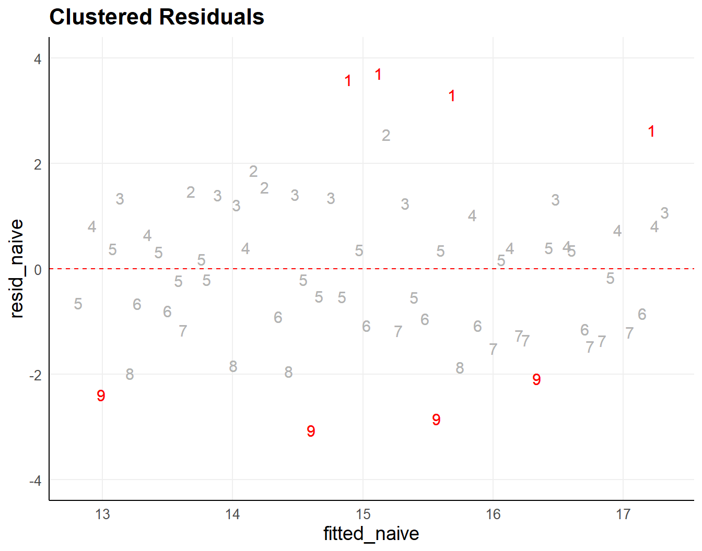
Ignoring grouping is a problem when within group similarities exist (dependencies):
- violation of i.i.d. assumption
- Standard errors are too small → p-values too small → false positives inflate.
- group specific effects ignored too
Solution: model the within group similarities,
once estimated the rest of the model is conditional upon it.
2.4 Note: within cluster similarity ~ between cluster difference
Capture dependence through estimating variance.
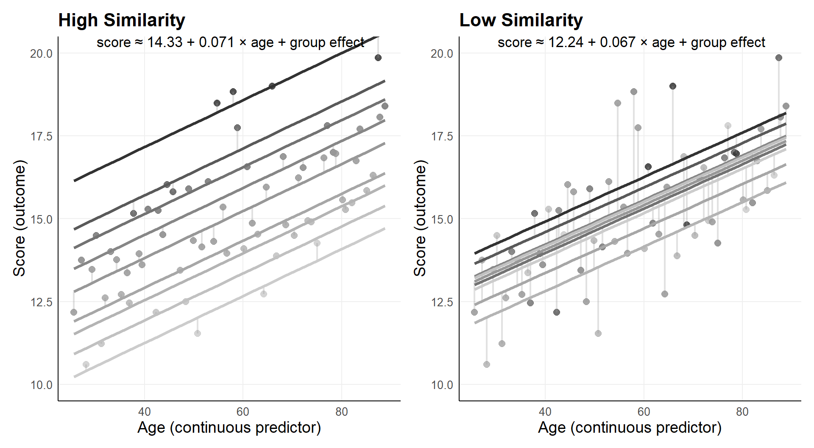
3 Mixed Model
Mixed models (a.k.a Multilevel Model)
- extend regression models,
- is modeling variance
- turning it into a conditional mean
- by estimating relations
- by minimizing squared error.
- while accomodating dependencies
- through estimating variances (heterogeneity)
3.1 Random Intercept Model
Let \(y_{ij}\) denote the outcome for individual \(i\) in cluster \(j\).
Level 1 (case within cluster): \[ y_{ij} = \underline{\beta_{0j}} + \beta_1 x_{ij} + \varepsilon_{ij}, \qquad \varepsilon_{ij} \sim \mathcal{N}(0,\ \sigma^2) \]
Level 2 (cluster-level model for the intercept): \[ \underline{\beta_{0j}} = \gamma_{00} + u_{0j}, \qquad u_{0j} \sim \mathcal{N}(0,\ \tau_{00}) \]
Combined (reduced form): \[ y_{ij} = \underbrace{\gamma_{00} + \beta_1 x_{ij}}_{\text{fixed part}} + \underbrace{u_{0j} + \varepsilon_{ij}}_{\text{random part}} \]
The random part implies a variance decomposed into random intercept variance and residual variance:
\[ \text{Var}(y_{ij}) = \tau_{00} + \sigma^2, \qquad \text{Cov}(y_{ij},\ y_{i'j}) = \tau_{00} \quad (i \neq i', \text{ same group } j) \]
The relative proportion of heterogeity for this simple model is the intra class correlation (ICC):
\(\text{ICC} = \tau_{00} / (\tau_{00} + \sigma^2)\).
3.2 Why a Random Intercept Model
Mixed models treat cluster effects as random draws from a distribution.
Instead of estimating J-1 fixed effects + intercept
\[ \beta_{0}, \beta_{1}, ..., \beta_{J-1} \]
random effects are estimated as
\[ \gamma_{00} + u_{0j} \qquad with \qquad u_{0j} \sim \mathcal{N}(0,\ \tau_{00}) \]
resulting in only 2 parameters to estimate: grand mean \(\gamma_{00}\) and variance \(\tau_{00}\)
Notice the similarity with the residuals:
\[ \varepsilon_i \overset{\text{i.i.d.}}{\sim} \mathcal{N}(0, \sigma^2). \]
A single variance parameter captures cluster heterogeneity
With a growing number of clusters
- no increase in number of parameters to estimate
- a better estimate of the variance parameter
In this particular case:
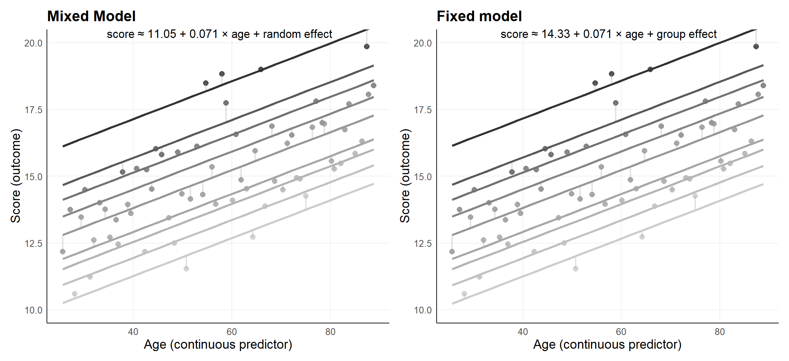
Mixed
in R:
lmer(score ~ age + (1 | group),
data = ..)
| term | estimate | std.error | df | statistic |
|---|---|---|---|---|
| (Intercept) | 11.049 | 0.652 | 8.621 | 16.943 |
| age | 0.071 | 0.002 | 54.054 | 31.797 |
| sd__(Intercept) | 1.914 | NA | NA | NA |
| sd__Observation | 0.306 | NA | NA | NA |
Cluster specific estimates extracted:
| (Intercept) |
|---|
| 3.25578815 |
| 1.80731994 |
| 1.25143614 |
| 0.62302063 |
| -0.07019019 |
| -0.96517266 |
| -1.34190800 |
| -1.94038853 |
| -2.61990547 |
| metric | icc_vals |
|---|---|
| tau_00 | 3.6648637 |
| sigma2 | 0.0935955 |
| ICC | 0.9750974 |
Fixed
in R
lm(score ~ age + group,
data = ..)
| term | estimate | std.error | statistic |
|---|---|---|---|
| (Intercept) | 14.327 | 0.213 | 67.238 |
| age | 0.071 | 0.002 | 31.777 |
| group2 | -1.458 | 0.221 | -6.606 |
| group3 | -2.021 | 0.189 | -10.696 |
| group4 | -2.652 | 0.188 | -14.133 |
| group5 | -3.347 | 0.174 | -19.287 |
| group6 | -4.245 | 0.188 | -22.564 |
| group7 | -4.623 | 0.188 | -24.652 |
| group8 | -5.230 | 0.221 | -23.711 |
| group9 | -5.914 | 0.218 | -27.133 |
Fixed, residuals
| sigma |
|---|
| 0.306 |
3.3 Level specific slopes
Different levels can have different predictors of the observations (at level 1).
- example: test results explained by patient (level 1) hospital (level 2) variables
- e.g., older patients (age) result in higher scores
- e.g., university hospitals (type) result in higher scores
Note: Variables can only explain variability at the lower or equal level.
Let \(y_{ij}\) denote the outcome for individual \(i\) in cluster \(j\).
Level 1 (case within cluster): \[ y_{ij} = \beta_{0j} + \beta_{1} x_{ij} + \varepsilon_{ij}, \qquad \varepsilon_{ij} \sim \mathcal{N}(0,\ \sigma^2) \]
Level 2 (cluster-level model for the intercept, with a Level‑2 predictor \(z_{j}\)): \[ \beta_{0j} = \gamma_{00} + \underline{\gamma_{01} z_{j}} + u_{0j}, \qquad u_{0j} \sim \mathcal{N}(0,\ \tau_{00}) \]
Combined (reduced form): \[ y_{ij} = \underbrace{\gamma_{00} + \beta_{1} x_{ij} + \gamma_{01} z_{j}}_{\text{fixed part}} + \underbrace{u_{0j} + \varepsilon_{ij}}_{\text{random part}} \]
The same variable can sometimes be split up and defined at different levels. Let \(y_{ij}\) denote the outcome for individual \(i\) in cluster \(j\).
Level 1 (case within cluster): \[ y_{ij} = \beta_{0j} + \underline{\beta_{1W} x_{ijW}} + \varepsilon_{ij}, \qquad \varepsilon_{ij} \sim \mathcal{N}(0,\ \sigma^2) \]
where
\(x_{ijW} = x_{ij} - \bar{x}_{j}\) (within-cluster centered \(x\))
\(\bar{x}_{j} = \frac{1}{n_j}\sum_{i=1}^{n_j} x_{ij}\) (cluster mean of \(x\))
Level 2 (cluster-level model for the intercept, now including the cluster mean): \[ \beta_{0j} = \gamma_{00} + \underline{\gamma_{01}\bar{x}_{j}} + u_{0j}, \qquad u_{0j} \sim \mathcal{N}(0,\ \tau_{00}) \]
Combined (reduced form): \[ y_{ij} = \underbrace{\gamma_{00} + \beta_{1W} x_{ijW} + \gamma_{01}\bar{x}_{j}}_{\text{fixed part}} + \underbrace{u_{0j} + \varepsilon_{ij}}_{\text{random part}} \]
A fixed slope, maybe age, or weight, … split in
- within cluster centered slope
- cluster specific average
One part focusses on within cluster relative position, other on cluster properties.
Example: blood pressure explained by body weight
- patients with relatively higher weights in a hospital may have higher blood pressure
- hospitals may differ in average weight because of …
Without this split, it could be a blend.
Note: ecological fallacy.
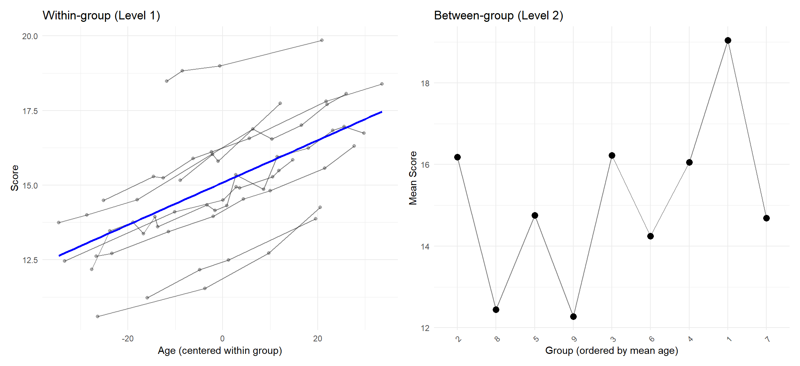
Repeating just fitting a slope.
| effect | group | term | estimate | std.error | statistic | df | p.value |
|---|---|---|---|---|---|---|---|
| fixed | NA | (Intercept) | 11.0488 | 0.6521 | 16.9431 | 8.6207 | 0 |
| fixed | NA | age | 0.0709 | 0.0022 | 31.7967 | 54.0537 | 0 |
| ran_pars | group | sd__(Intercept) | 1.9144 | NA | NA | NA | NA |
| ran_pars | Residual | sd__Observation | 0.3059 | NA | NA | NA | NA |
| nobs | sigma | logLik | AIC | BIC | REMLcrit | df.residual |
|---|---|---|---|---|---|---|
| 64 | 0.306 | -43.568 | 95.136 | 103.771 | 87.136 | 60 |
Splitting up over levels.
| effect | group | term | estimate | std.error | statistic | df | p.value |
|---|---|---|---|---|---|---|---|
| fixed | NA | (Intercept) | 8.8772 | 5.1324 | 1.7296 | 6.9933 | 0.1274 |
| fixed | NA | agem | 0.1089 | 0.0890 | 1.2233 | 6.9917 | 0.2609 |
| fixed | NA | agec | 0.0709 | 0.0022 | 31.7744 | 53.9835 | 0.0000 |
| ran_pars | group | sd__(Intercept) | 2.0212 | NA | NA | NA | NA |
| ran_pars | Residual | sd__Observation | 0.3059 | NA | NA | NA | NA |
| nobs | sigma | logLik | AIC | BIC | REMLcrit | df.residual |
|---|---|---|---|---|---|---|
| 64 | 0.306 | -44.999 | 99.997 | 110.792 | 89.997 | 59 |
For the data, a general slope can be fitted, and alternatively, a within and a between slope.
Relative age matters within clusters,
Cluster average ages does not matter.
3.4 Borrowing Strength: Partial Pooling
Strategies for estimating each clusters’ intercept:
- No pooling: independent clusters, ignores information from other clusters
- Complete pooling: grand mean, ignores group membership
- Partial pooling: reconciles both, compromise
Partial pooling, the key mixed model characteristic
- cluster specific estimates
- more global estimates
Possible becasue clusters sampled from an underlying population
- other clusters are informative
- use dependency through common population of clusters
Partial pooling implies shrinkage:
shrink each group estimate toward the grand mean
results in random effects \(\hat{u}_{0j}\) or Best Linear Unbiased Predictor (BLUP):
\[ \hat{u}_{0j} = \underbrace{\frac{n_j/\sigma^2}{n_j/\sigma^2 + 1/\tau_{00}}}_{\text{reliability weight}\ \lambda_j} \cdot \left(\bar{y}_{\cdot j} - \hat{\gamma}_{00}\right) \]
The weight defines the percentage with which cluster specific deviation from the global average shrink
- \(\lambda_j \to 1\) with increasing cluster sizes and stronger within cluster correlations (trust the raw data)
- \(\lambda_j \to 0\) witch decreasing cluster sizes and weaker within cluster correlations (shrink toward the overall mean).
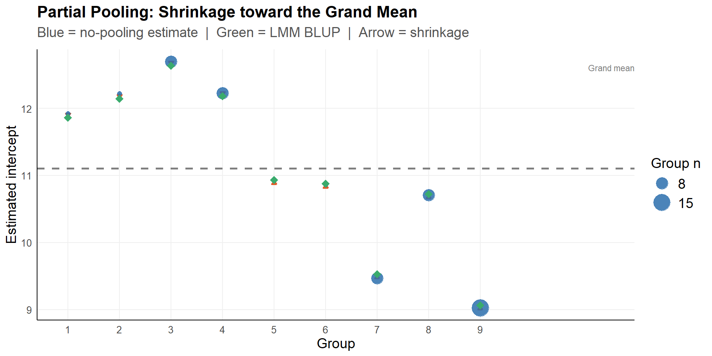
Note: modeling the correlation to shrink estimates allows for cluster specific effects not explicitely represented
Example: matching is not a reason to turn to mixed models,
matching uses explicitly available information that should included in the model as such
3.5 Within-Cluster Correlation and Effective Sample Size
Consider two types of predictors:
- Between-cluster predictor \(Z_j\) (e.g. hospital type)
- Only varies between clusters, constant within a cluster.
- Within-cluster predictor \(x_{ij}\) (e.g. treatment dose)
- Varies within clusters.
For a balanced design with \(J\) clusters and \(m\) observations per cluster:
- Variance of the estimator for the between-cluster effect is approximately proportional to
\[ \text{Var}(\hat{\gamma}_{01}) \propto \frac{\tau_{00} + \sigma^2/m}{J}. \]
- Variance of the estimator for the within-cluster effect is approximately proportional to
\[ \text{Var}(\hat{\gamma}_{10}) \propto \frac{\sigma^2}{J \cdot m}. \]
As \(\rho\) increases (i.e. \(\tau_{00}\) grows relative to \(\sigma^2\)):
- \(\tau_{00} + \sigma^2/m\) becomes larger \(\Rightarrow\) between-cluster effects become harder to detect.
- \(\sigma^2\) becomes smaller relative to the total variance \(\Rightarrow\) within-cluster effects become easier to detect.
Stronger within-cluster correlation makes
- between-cluster differences harder to detect.
- within-cluster differences easier to detect.
Note: cluster randomization focuses on between cluster effects, dependent more on the number of clusters, less on the number of observations.
To compare treatments,
randomizing within each cluster is usually far more efficient
3.6 Adding a Random Slope
3.6.1 Heterogeneity of Effects
A cluster specific slope (effect) can be considered sampled from a common population, with a mean and variance. This is equivalent to cluster specific intercepts.
Level 1: \[ y_{ij} = \beta_{0j} + \underline{\beta_{1j} x_{ij}} + \varepsilon_{ij}, \qquad \varepsilon_{ij} \sim \mathcal{N}(0,\ \sigma^2) \]
Level 2: \[ \beta_{0j} = \gamma_{00} + u_{0j}, \qquad \underline{\beta_{1j}} = \gamma_{10} + u_{1j} \]
Distributional assumption for the random effects: \[ \begin{pmatrix} u_{0j} \\ u_{1j} \end{pmatrix} \sim \mathcal{N}\!\left(\begin{pmatrix}0\\0\end{pmatrix},\ \boldsymbol{\Psi}\right), \qquad \boldsymbol{\Psi} = \begin{pmatrix} \underline{\tau_{00}} & \underline{\tau_{01}} \\ \tau_{01} & \underline{\tau_{11}} \end{pmatrix} \]
Combined: \[ y_{ij} = \underbrace{\gamma_{00} + \gamma_{10} x_{ij}}_{\text{fixed}} + \underbrace{u_{0j} + u_{1j} x_{ij} + \varepsilon_{ij}}_{\text{random}} \]
\(\boldsymbol{\Psi}\) captures:
- \(\tau_{00}\): how much cluster intercepts vary
- \(\tau_{11}\): how much cluster slopes vary
- \(\tau_{01}\): covariance between intercept and slope (e.g., high-baseline clusters may also have steeper slopes)
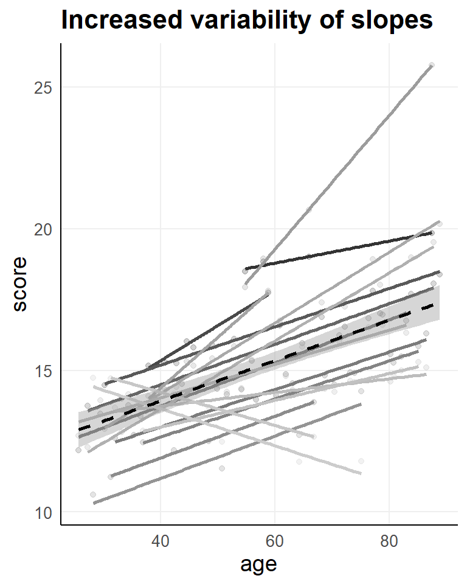
| effect | group | term | estimate | std.error | statistic | df | p.value |
|---|---|---|---|---|---|---|---|
| fixed | NA | (Intercept) | 10.9977 | 0.7236 | 15.1978 | 16.5498 | 0e+00 |
| fixed | NA | age | 0.0736 | 0.0166 | 4.4196 | 16.7056 | 4e-04 |
| ran_pars | group | sd__(Intercept) | 3.0292 | NA | NA | NA | NA |
| ran_pars | group | cor__(Intercept).age | -0.8820 | NA | NA | NA | NA |
| ran_pars | group | sd__age | 0.0701 | NA | NA | NA | NA |
| ran_pars | Residual | sd__Observation | 0.2751 | NA | NA | NA | NA |
| nobs | sigma | logLik | AIC | BIC | REMLcrit | df.residual |
|---|---|---|---|---|---|---|
| 128 | 0.275 | -106.28 | 224.561 | 241.673 | 212.561 | 122 |
Convergence problems:
- few groups (< 10–20), covariance \(\boldsymbol{\Psi}\) can be hard to estimate reliably
- center the predictors to remove correlation random intercept - random slope
- avoid estimation of covariance:
(1 + age || group)which constrains \(\tau_{01} = 0\).
| effect | group | term | estimate | std.error | statistic | df | p.value |
|---|---|---|---|---|---|---|---|
| fixed | NA | (Intercept) | 11.0488 | 0.6522 | 16.9413 | 8.6176 | 0 |
| fixed | NA | age | 0.0709 | 0.0022 | 31.7972 | 54.0546 | 0 |
| ran_pars | group | sd__(Intercept) | 1.9146 | NA | NA | NA | NA |
| ran_pars | group.1 | sd__age | 0.0000 | NA | NA | NA | NA |
| ran_pars | Residual | sd__Observation | 0.3059 | NA | NA | NA | NA |
4 Technicalities
Statistical inference is about
- statistical estimation → size
- estimate: my best guess
- standard error: uncertainty about my best guess
- statistical testing → decision
- p-value: probability that by chance
- change in AIC: improved model
4.1 ML vs REML in Mixed Models
Estimation typically by Maximum Likelihood (ML) or Restricted Maximum Likelihood (REML).
Optimize likelihood function
- ML estimates fixed effects and variance components together
- REML estimate the variance components on the information after removal of fixed effects
REML reduces small-sample bias in variance estimates (small number of clusters)
Use REML when
- estimation of variance components / random effects.
- fitting a final model
Use ML when
- comparison of nested models with different fixed-effects structure
- focus on testing or selecting fixed effects
4.2 Testing Variance Components
For variance components, the null hypothesis typically assumes variances at the boundary of the parameter space (e.g. \(\tau^2 = 0\)).
The asymptotic distribution of the likelihood ratio test (LRT) can be considered a mixture of chi-squares.
4.2.1 Example: testing a random intercept (single variance)
Null hypothesis: no between-cluster variability / heterogeneity
Test \(H_0: \tau_{00} = 0\) vs \(H_1: \tau_{00} > 0\).
Fit both models by ML (not REML)
The Likelihood Ratio test statistics is computed
LR_stat <- 2 * (as.numeric(logLik_mod1) - as.numeric(logLik_mod0))Under \(H_0\), the variance component is on the boundary (\(\tau_{00} = 0\)), the LRT does not follow \(\chi^2_1\), but rather a mixture of chi-square distributions:
\(\frac{1}{2} \chi^2_0 + \frac{1}{2} \chi^2_1\)
where \(\chi^2_0\) is a point mass at 0.
This leads to a simple p-value adjustment: take half !
Evaluate the Likelihood ratio test statistics:
\(p = 0.5 \cdot P(\chi^2_1 \ge \text{LR})\)
4.2.2 Beyond a single variance
Testing more complex hypothesis,
about multiple variances and/or covariances
- e.g., testing a random slope variance
- e.g., testing a variance and a covariance simultaneously
asymptotic LRT distribution remains finite mixture of chi-squared distributions,
with degrees of freedom and weights in the mixture depend on
- number of constrained variance and covariance parameters
- structure of the covariance matrix \(H_0\) and \(H_1\)
More complex models require simulation.
Note: testing covariance is not a challenge
5 Additional Nesting
5.1 Nesting Within Nesting
Data can be nested at more than two levels: patients within wards within hospitals.
Let \(y_{ijk}\) = outcome for patient \(i\), in ward \(j\), in hospital \(k\).
Level 1 (patient within ward): \[ y_{ijk} = \pi_{0jk} + \pi_1 x_{ijk} + e_{ijk}, \qquad e_{ijk} \sim \mathcal{N}(0,\ \sigma^2) \]
Level 2 (ward within hospital): \[ \pi_{0jk} = \underline{\beta_{00k}} + r_{0jk}, \qquad r_{0jk} \sim \mathcal{N}(0,\ \tau_\pi^2) \]
Level 3 (hospital): \[ \underline{\beta_{00k}} = \gamma_{000} + u_{00k}, \qquad u_{00k} \sim \mathcal{N}(0,\ \tau_\beta^2) \]
Combined: \[ y_{ijk} = \underbrace{\gamma_{000} + \pi_1 x_{ijk}}_{\text{fixed}} + \underbrace{u_{00k} + r_{0jk} + e_{ijk}}_{\text{three random terms}} \]
Additional variance components are included to capture heterogeneity:
- \(\tau_\beta^2\) (between hospitals)
- \(\tau_\pi^2\) (between wards within hospitals)
- \(\sigma^2\) (within wards).
Note: different levels are assumed independent,
within a level covariance can exist,
between levels covariance is not possible.
m_3lvl <- lmer(y ~ x + (1 | school/class), data = df_3lvl)5.2 Cross-classification
A level 1 unit can be associated with multiple higher level classifications jointly. Examples include:
- Patients measured once, classified by both hospital and neighborhood
- Ratings classified by both rater and target
In such cases, the higher-level units are crossed rather than nested, with a separate random effect for each classification.
Let \(y_{ijk}\) denote the outcome for student \(i\), in school \(j\), and in neighborhood \(k\).
Level 1 \[ y_{ijk} = \beta_0 + \beta_1 x_{ijk} + u_{0j} + v_{0k} + e_{ijk}, \qquad e_{ijk} \sim \mathcal{N}(0,\ \sigma^2) \]
Level 2 random effects \[ u_{0j} \sim \mathcal{N}(0,\ \tau_{\text{school}}^2), \qquad v_{0k} \sim \mathcal{N}(0,\ \tau_{\text{neigh}}^2) \]
Combined \[ y_{ijk} = \beta_0 + \beta_1 x_{ijk} + u_{0j} + v_{0k} + e_{ijk} \]
Additional variance components capture heterogeneity:
- \(\tau_{\text{school}}^2\) (between hospitals)
- \(\tau_{\text{neigh}}^2\) (between neighborhoods)
- \(\sigma^2\) (within school–neighborhood combinations)
Here schools and neighborhoods are independent classifications, not nested. A patient belongs to one hospital and one neighborhood, but hospitals are not contained within neighborhoods, nor vice versa [1][2].
m_cc <- lmer(y ~ x + (1 | school) + (1 | neighborhood), data = df_cc)Extendable to crossed random slopes (e.g., school-specific effects of \(x\))
m_cc_slope <- lmer(y ~ x + (x | hospital) + (1 | neighborhood), data = df_cc)6 Longitudinal Data
When clustering is because of repeated measurements over time:
- same mixed model dependencies arise within units
- but time is ordered.
- temporal structure: measurements closer in time could be more similar
We now re-interpret the two levels:
- Level 1: observations (at different time points), within patient
- Level 2: patient
The random effects shape individual trajectories.
6.1 Categorical and Continuous Time Scale
Time within mixed models
- does not require
- equidistance
- fixed timepoints
- can be categorical (ordinal) or continuous (numeric)
Choose continuous when:
- time is meaningful numerically; time elapsed is a driver
- trajectories behave smooth over time
Choose categorical when:
- time is not fully meaningful numerically
- order can be a driver
- trajectories change in nature (data generating process)
- e.g., pre-post, 3m, 6m, 12m
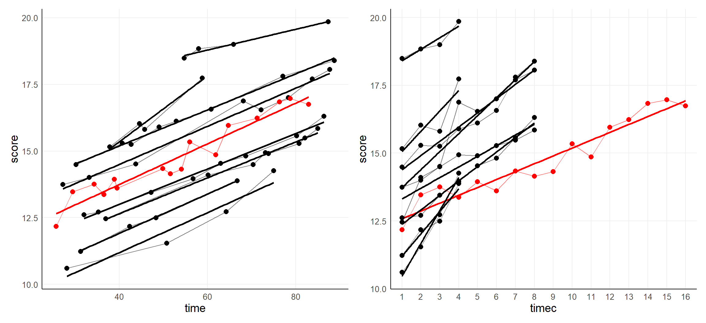
6.2 The Longitudinal Random Intercept Model
The simplest longitudinal model
- individuals start at different baselines
- change at the same average rate
- just a random intercept model with time as predictor
- correlation within clusters, independent of time difference
\[ y_{it} = \underbrace{(\gamma_{00} + u_{0i})}_{\text{person-specific intercept}} + \underline{\gamma_{10} \cdot \text{time}_{it}} + \varepsilon_{it} \]
with: \[ u_{0i} \sim \mathcal{N}(0,\ \tau_{00}), \qquad \varepsilon_{it} \sim \mathcal{N}(0,\ \sigma^2) \]
The model fit now uses time as fixed variable to capture the average change,
while accomodating a constant covariance between residuals remaining.
lmert_int_9 <- lmer(score ~ time + (1 | group), data = dta_timed_x)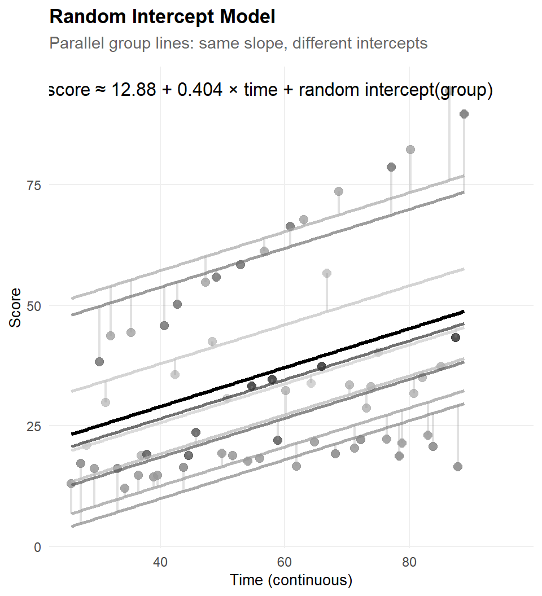
6.2.1 Categorical Time
With 4 time points (T0, T3, T6, T9), we can compare scores in two ways:
- Consecutive timepoints: T3 vs T0, T6 vs T3, T9 vs T6 (differences between adjacent times)
- All vs reference: T3 vs T0, T6 vs T0, T9 vs T0 (all times compared to baseline)
Expected marginal means used to extract contrasts from a fitted model:
All vs Reference (T0)
Consecutive Comparisons
All Pairwise Comparisons
| contrast estimate SE df t.ratio p.value
| T0 - T3 -0.799 0.245 24 -3.254 0.0166
| T0 - T6 -1.170 0.245 24 -4.764 0.0004
| T0 - T9 -2.201 0.245 24 -8.964 <.0001
| T3 - T6 -0.371 0.245 24 -1.510 0.4475
| T3 - T9 -1.402 0.245 24 -5.710 <.0001
| T6 - T9 -1.031 0.245 24 -4.200 0.0017
|
| Degrees-of-freedom method: kenward-roger
| P value adjustment: tukey method for comparing a family of 4 estimatesCustom Comparisons can address specific research questions,
E.g., T9 vs avg(T3, T6) uses contrast parameters 0, -0.5, -0.5, 1
| contrast estimate SE df t.ratio p.value
| T9 - (T6+T3)/2 1.22 0.213 24 5.722 <.0001
|
| Degrees-of-freedom method: kenward-roger6.3 The Longitudinal Random Intercept - Random Slope Model
Heterogeneity can exist over intercept, but also over slopes
- individuals differ in slope
- with an average slope, and an individual specific difference from that average
- time as fixed and random effect
For longitudinal data, individuals can differ in their average but also in their change over time.
\[ y_{it} = (\gamma_{00} + u_{0i}) + (\gamma_{10} + u_{1i}) * \text{time}_{it} + \varepsilon_{it} \]
with: \[ \begin{pmatrix} u_{0i} \\ u_{1i} \end{pmatrix} \sim \mathcal{N}\!\left(\mathbf{0},\ \begin{pmatrix} \tau_{00} & \tau_{01} \\ \tau_{01} & \tau_{11} \end{pmatrix}\right), \qquad \varepsilon_{it} \sim \mathcal{N}(0,\ \sigma^2) \]
The covariance \(\tau_{01}\) is often negative, starting higher results in stronger decrease, or starting lower in stronger increase.
Again: To avoid convergence issues you should center the random slope to reduce colinearity with the intercept.
lmert_slp_9 <- lmer(score ~ time + (1 + time | group), data = dta_timed_x)| effect | group | Term | Estimate | Std. Error | t value | df | p value |
|---|---|---|---|---|---|---|---|
| fixed | NA | (Intercept) | 11.227 | 1.142 | 9.830 | 6.740124 | 3.07 × 10−5 |
| fixed | NA | time | 0.438 | 0.105 | 4.171 | 8.078695 | 3.05 × 10−3 |
| ran_pars | group | sd__(Intercept) | 2.005 | NA | NA | NA | NA |
| ran_pars | group | cor__(Intercept).time | −0.125 | NA | NA | NA | NA |
| ran_pars | group | sd__time | 0.312 | NA | NA | NA | NA |
| ran_pars | Residual | sd__Observation | 1.908 | NA | NA | NA | NA |
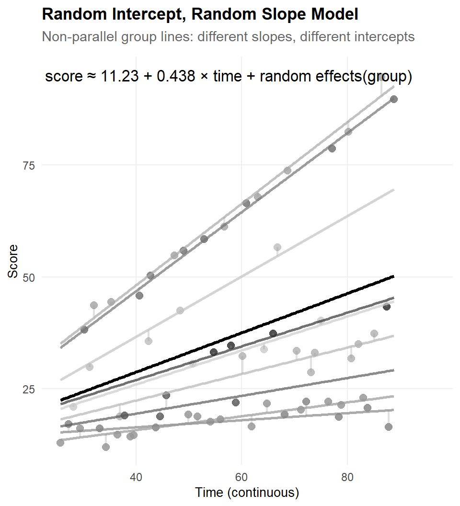
7 Covariance Structures
Whithin cluster correlational structures:
- correlation same for all pairs
- correlation different for all pairs
- correlation structured (in between the above)
Choose covariance structure for the outcome vector \(\mathbf{y}_i\) of patient \(i\).
Note: covariance structures
- implied by the variance-covariance estimated
- specified as a repeated measures structure (residual covariance).
For \(T = 4\) time points, the covariance matrix \(\boldsymbol{\Sigma}_i\) is 5×5.
7.1 Most Common Structures
7.1.1 Compound Symmetry (CS)
All variances equal; all covariances equal regardless of time lag.
\[ \boldsymbol{\Sigma}_{\text{CS}} = \begin{pmatrix} \sigma^2 & \rho\sigma^2 & \rho\sigma^2 & \rho\sigma^2 \\ \rho\sigma^2 & \sigma^2 & \rho\sigma^2 & \rho\sigma^2 \\ \rho\sigma^2 & \rho\sigma^2 & \sigma^2 & \rho\sigma^2 \\ \rho\sigma^2 & \rho\sigma^2 & \rho\sigma^2 & \sigma^2 \end{pmatrix} \]
This is exactly what a random intercept model implies. Two parameters: \(\sigma^2\) and \(\rho\).
Note: this is often used for clustered data, not necessarily repeated measurements.
7.1.2 Unstructured (UN)
No constraints — every variance and every covariance is estimated freely. For \(T\) time points: \(T(T+1)/2\) parameters. Most flexible, but most expensive in terms of parameters.
\[ \boldsymbol{\Sigma}_{\text{Unstructured}} = \begin{pmatrix} \sigma_1^2 & \sigma_{12} & \sigma_{13} & \sigma_{14} \\ \sigma_{12} & \sigma_2^2 & \sigma_{23} & \sigma_{24} \\ \sigma_{13} & \sigma_{23} & \sigma_3^2 & \sigma_{34} \\ \sigma_{14} & \sigma_{24} & \sigma_{34} & \sigma_4^2 \end{pmatrix} \]
7.1.3 Heterogeneous Compound Symmetry (CSH)
Like CS, but allows variances to differ across time points. Useful when variability grows over follow-up.
\[ \boldsymbol{\Sigma}_{\text{CSH}} = \begin{pmatrix} \sigma_1^2 & \rho\,\sigma_1\sigma_2 & \rho\,\sigma_1\sigma_3 & \rho\,\sigma_1\sigma_4 \\ \rho\,\sigma_1\sigma_2 & \sigma_2^2 & \rho\,\sigma_2\sigma_3 & \rho\,\sigma_2\sigma_4 \\ \rho\,\sigma_1\sigma_3 & \rho\,\sigma_2\sigma_3 & \sigma_3^2 & \rho\,\sigma_3\sigma_4 \\ \rho\,\sigma_1\sigma_4 & \rho\,\sigma_2\sigma_4 & \rho\,\sigma_3\sigma_4 & \sigma_4^2 \end{pmatrix} \]
7.1.4 Autoregressive Order 1 — AR(1)
Correlation decays exponentially with lag: \(\text{Corr}(y_t, y_{t+k}) = \rho^k\).
\[ \boldsymbol{\Sigma}_{\text{AR(1)}} = \sigma^2 \begin{pmatrix} 1 & \rho & \rho^2 & \rho^3 \\ \rho & 1 & \rho & \rho^2 \\ \rho^2 & \rho & 1 & \rho \\ \rho^3 & \rho^2 & \rho & 1 \end{pmatrix} \]
Two parameters: \(\sigma^2\) and \(\rho\). Natural for equally-spaced measurements with decaying memory.
7.1.5 Heterogeneous AR(1)
Allow the variances to change over time.
\[ \boldsymbol{\Sigma}_{\text{ARH(1)}} = \begin{pmatrix} \sigma_1^2 & \rho\,\sigma_1\sigma_2 & \rho^2\,\sigma_1\sigma_3 & \rho^3\,\sigma_1\sigma_4 \\ \rho\,\sigma_1\sigma_2 & \sigma_2^2 & \rho\,\sigma_2\sigma_3 & \rho^2\,\sigma_2\sigma_4 \\ \rho^2\,\sigma_1\sigma_3 & \rho\,\sigma_2\sigma_3 & \sigma_3^2 & \rho\,\sigma_3\sigma_4 \\ \rho^3\,\sigma_1\sigma_4 & \rho^2\,\sigma_2\sigma_4 & \rho\,\sigma_3\sigma_4 & \sigma_4^2 \end{pmatrix} \]
7.1.6 Toeplitz
Correlations depend only on the lag, but without the exponential constraint of AR(1). Each lag distance has its own parameter. More flexible than AR(1), fewer parameters than unstructured.
\[ \boldsymbol{\Sigma}_{\text{Toeplitz}} = \begin{pmatrix} \tau_0 & \tau_1 & \tau_2 & \tau_3 \\ \tau_1 & \tau_0 & \tau_1 & \tau_2 \\ \tau_2 & \tau_1 & \tau_0 & \tau_1 \\ \tau_3 & \tau_2 & \tau_1 & \tau_0 \end{pmatrix} \]
7.1.7 6. …
Various others exist, choose
- most efficient
- captures the assumed process
- continuous or not, equidistant or not ?
- is in line with the data
- choose based on AIC or BIC (fitted with ML)
8 Final Remarks
Mixed models
- are regression models, extended with a model for dependencies
- explicitly model two (or more) sources of variation:
- within-cluster variation
- between-cluster variation
- use clusters (e.g., patients, hospitals, sites), linked through a common population of clusters
- capture cluster-specificities through:
- random effects (cluster-specific deviations)
- induced correlation structures for repeated/linked measurements
- allow borrowing strength across clusters via partial pooling
- provide flexible covariance structures for errors / random effects
- e.g., AR(1), heterogeneous AR(1), compound symmetry, heterogeneous CS, unstructured, Toeplitz
- yield more accurate inference for:
- fixed effects (regression coefficients)
- predicted cluster-specific trajectories / means
- handle unbalanced data and missing observations naturally
- are appropriate for:
- repeated measures, longitudinal data
- hierarchical / nested data
- clustered survey data, multi-site studies
welcome to discuss further @ SQUARE book an appointment through square.research.vub.be